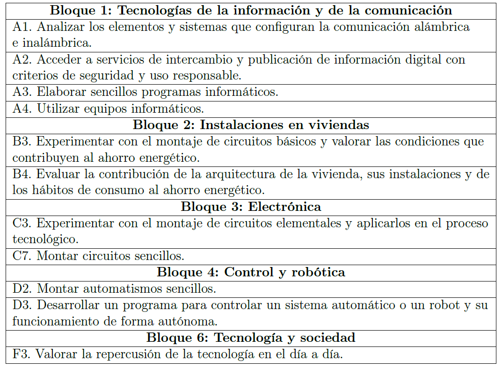

Criterios de evaluación
A continuación, se presentan los bloques de contenidos dados en este actividad de la materia de tecnología de 4º de ESO, con los criterios de evaluación asociados. Esta tabla se ha obtenido de la Orden del 15 de enero de 2021, que regula el currículo de la etapa de educación secundaria (BOJA, 2021).
